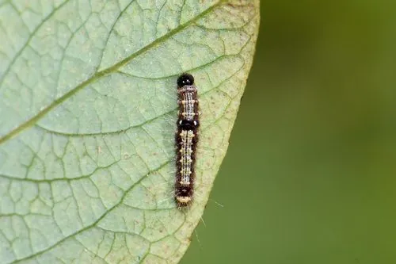

昆虫 · 动物界
杨扇舟蛾 Clostera anachoreta

幼虫群集吐丝卷叶成扇状虫苞的灰褐色蛾类，是杨树和柳树的重要食叶害虫，一年多代。
- 分类
- 门节肢动物门纲昆虫纲目鳞翅目科舟蛾科属扇舟蛾属
- 栖息环境
- 杨树、柳树成片的林带、行道树与河滩湿地
- 地理分布
- 中国南北各地及欧洲、日本、朝鲜半岛
- 保护级别
- 常见害虫，无保护需求，靠监测与防治控制种群
物种志
杨扇舟蛾的成虫翅展约三至四厘米，体翅灰褐色，前翅有数条淡色横纹，翅中央有一块灰白色扇形斑，停歇时两翅合拢，形似一小片枯叶。幼虫初孵时群集，吐丝把叶片卷成扇形虫苞，躲在里面取食，虫苞悬挂在枝梢，远远看去像挂着一串小扇子，杨扇舟蛾之名由此而来。
它分布于中国南北各地以及欧洲、日本和朝鲜半岛，栖息在杨树、柳树成片的林带、行道树和河滩。成虫夜间活动，有趋光性。幼虫共五龄，取食杨属、柳属叶片，大发生时能把整片树叶吃光，只留叶脉，树冠一片枯黄，严重影响林木生长。它以蛹在落叶层或土缝中越冬，一年发生三至五代，是林业重点监测的食叶害虫。
形态与习性
- 翅展约三至四厘米，灰褐色
- 虫苞幼虫吐丝卷叶成扇形，悬挂枝梢
- 食性取食杨属、柳属叶片
- 世代一年三至五代，以蛹越冬
- 危害大发生时可将树叶吃光，仅留叶脉
- 防治灯光诱杀成虫，喷施生物制剂
趣味知识
- 幼虫把叶片卷成扇形小屋，自己躲在里面吃住，一片叶子就是一个家。
- 它一年能繁殖好几代，暴发时整条林带的杨树都会被啃得只剩叶脉。
- 成虫有很强的趋光性，夜晚的灯光下常能捡到不少个体。